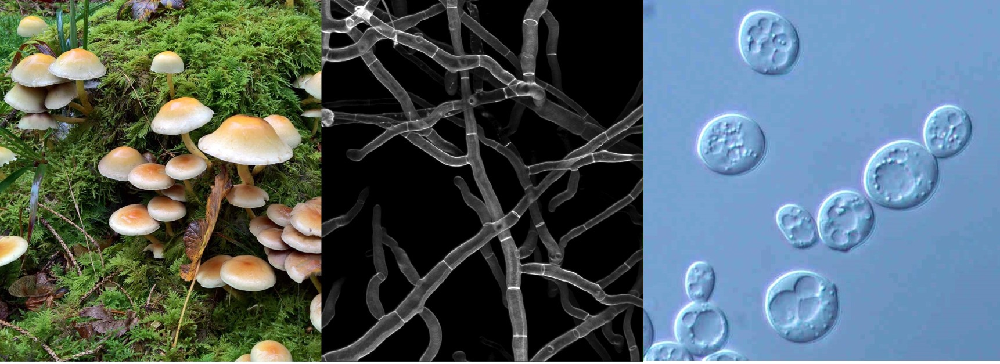

Fungi exhibit a range of forms, including macroscopic filamentous fungi, multicellular filamentous molds, and yeasts, each contributing uniquely to ecosystems and industries. These diverse fungal types play integral roles in various biological processes, from decomposition to fermentation.

Macroscopic fungi
Macrofungi are characterized by their visible, often large, fruiting bodies such as mushrooms and brackets, which emerge above the substrate. These fungi typically possess complex structures composed of hyphae, forming mycelium networks that facilitate nutrient absorption and reproduction, representing an essential aspect of fungal diversity and ecological function.
Multicellular filamentous moulds
Multicellular filamentous molds are characterized by their intricate hyphal networks, which extend and intertwine to form visible colonies on substrates. These molds thrive in diverse environments, exploiting organic matter for nutrients while releasing enzymes to break down complex molecules.
Yeast
Yeast are single-celled fungi, characterized by their spherical to oval shape and their ability to reproduce asexually through budding or fission. These microorganisms thrive in various habitats, including soil, plant surfaces, and fermenting substrates, where they play crucial roles in fermentation processes such as bread making, brewing, and wine production.
Classification of the Fungi
- Chytridiomycota: Chytrids
- Zygomycota: Zygote Fungi
- Microsporidia
- Glomeromycota
- Ascomycota: Sac Fungi
- Basidiomycota: Club Fungi
Note
Fungi are currently categorized into three different Kingdoms. We provide only descriptions of the Eumycota. It includes significant representatives from the Ascomycota, Basidiomycota, and Zygomycotarelevant to medicine.